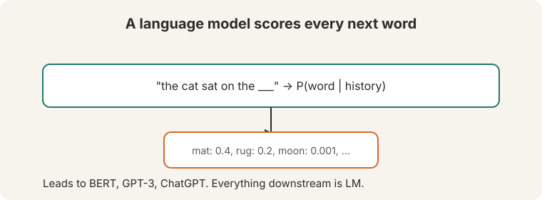
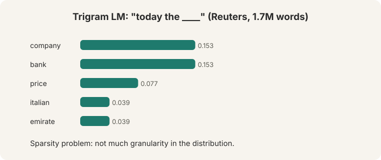
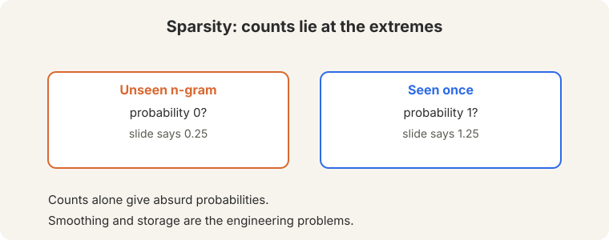
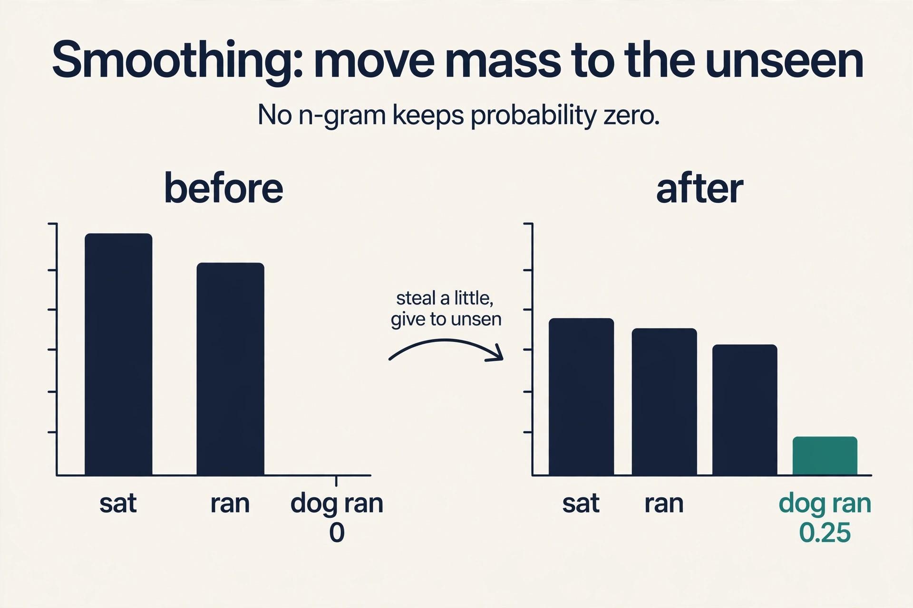
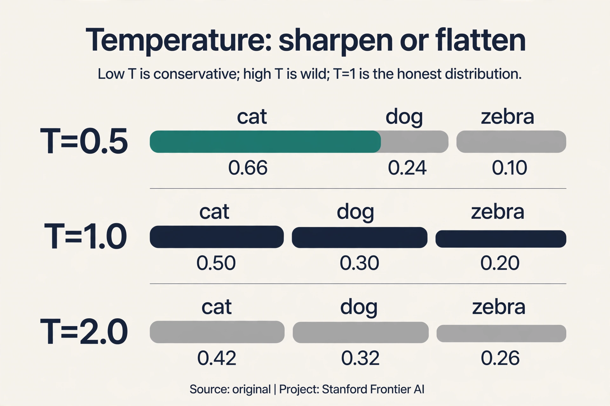
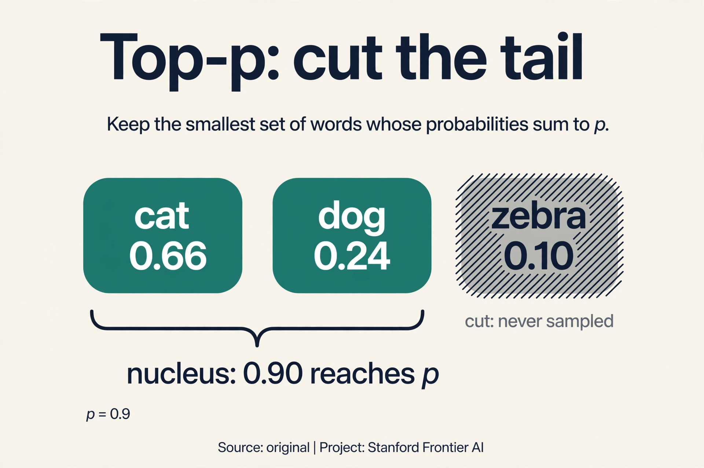
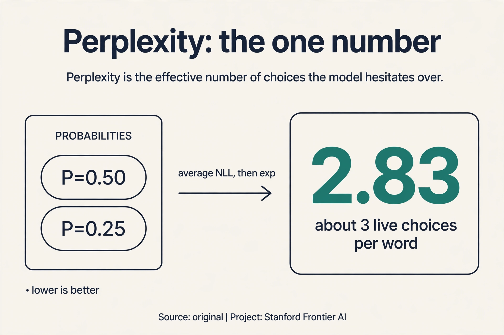
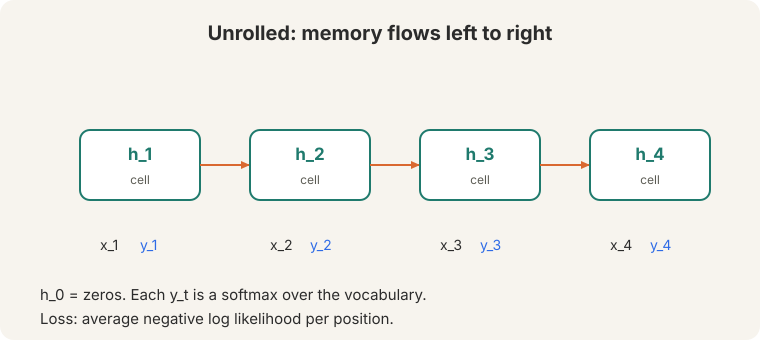
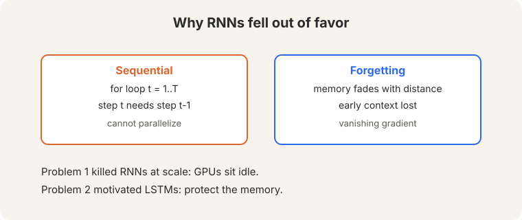

Lecture 5: Language Modeling and RNNs
Video blocked (ad-blocker or local file mode).
Watch on YouTubeVideo not loading? Watch on YouTube
Original lecture. Christopher Manning introduces language modeling, n-grams, and recurrent neural networks.
The central concept
A language model assigns a probability to every possible next word. The lecture calls it “the most important concept in the class”. It leads to BERT, GPT-3, and ChatGPT. Translation, question answering, summarization: everything downstream is language modeling.
On this page: Add-k · Backoff · Kneser-Ney · Temperature · Top-p · Perplexity · Language models in production · Watch and go deeper

The job is concrete. Given “today the”, the model must say how likely each vocabulary word is to come next. A good model gives “company” high probability and “zebra” low probability. Train that judgment on enough text and the model can generate: sample a word, feed it back, repeat.
First attempt: count
The classical approach counts. A trigram model over 1.7 million Reuters words (29:06 ⏱29:06) estimates P(word | previous two words) from frequencies: count how often the triple occurred, divide by the count of the pair.

Given “today the”, the model outputs a distribution: company 0.153, bank 0.153, price 0.077, italian 0.039, emirate 0.039. To generate text, sample from it. Watch the counting on a toy corpus: “the cat sat”, “the cat ran”, “the dog sat”. P(sat | the, cat) = count(“the cat sat”) / count(“the cat”) = 1/2 = 0.5. That is the whole method: count, divide, sample.
Where counting breaks
Sparsity. Most possible n-grams never occur. An unseen trigram gets probability 0, which kills any sentence containing it: one zero factor zeroes the whole product. A trigram seen once gets probability 1: total, unearned certainty. The distribution has no granularity. The toy shows it: “the dog ran” never occurred, so its probability is exactly 0, even though it is a perfectly good sentence.

Storage. Every n-gram needs a count. With a 500,000-word vocabulary, there are 500,000^3 = 1.25 x 10^17 possible trigrams. The table grows with the corpus and can never cover the space. Real systems smooth the counts, redistributing probability mass to unseen n-grams. Smoothing is a patch on a fundamentally discrete representation: the model still only knows what it counted.
Subchapter: add-k, the blunt patch
Raw counts give unseen n-grams probability zero. The bluntest fix: add k to every count. Watch add-1 on the toy corpus (“the cat sat”, “the cat ran”, “the dog sat”), vocabulary {sat, ran, dog}:
P(sat | the, cat) = (1 + 1) / (2 + 3) = 0.40 (was 0.50) P(ran | the, dog) = (0 + 1) / (1 + 3) = 0.25 (was 0.00)
Nothing is zero anymore. Nothing is 1 either. Every estimate shrinks toward uniform: that shrinkage is the price of the patch. Add-k is crude but it kills the zeros, and the zeros were killing sentences.

Subchapter: backoff, trust what you have
Add-k trusts all n-gram orders equally. Backoff is smarter: use the longest context you have counts for. If the trigram “the cat sat” was seen, use it. If “the dog ran” was never seen, fall back to the bigram P(ran | dog), then to the unigram P(ran). Trust long context when the counts support it, short context when they do not. The fallback weights are learned so the probabilities still sum to 1.
Subchapter: Kneser-Ney, count contexts not words
Backoff still counts occurrences. Kneser-Ney counts contexts. Its insight: a word’s backoff probability should measure how many different histories precede it, not how often it occurs. “Francisco” occurs often but only after “San”: it is not a versatile word and deserves little backoff mass. “Dog” occurs less often but after hundreds of different words: it deserves more.
Watch the difference on a toy. “Francisco” occurs 1,000 times, all after “San”: 1 distinct context. “Dog” occurs 500 times after 300 distinct words: 300 contexts. Kneser-Ney gives “dog” far more backoff probability than “Francisco”, even though “Francisco” is more frequent. Occurrence counts memorize. Context counts generalize. Kneser-Ney was the production standard for n-gram models for two decades.
Subchapter: temperature, sharpen or flatten
A language model outputs a distribution. Generation turns the distribution into words. The baseline is greedy: always pick the top word. Deterministic, repetitive, good for the single most likely continuation, bad for prose. Temperature generalizes it. Divide the logits by T before the softmax. Watch one distribution, {cat: 0.5, dog: 0.3, zebra: 0.2}, under three temperatures:
T = 0.5: [0.66, 0.24, 0.10] (sharpened: the leader pulls away) T = 1.0: [0.50, 0.30, 0.20] (the model's honest distribution) T = 2.0: [0.42, 0.32, 0.26] (flattened: the tail gets loud)
Low T is conservative: the top word dominates. High T is wild: rare words get sampled far too often and the text derails. T = 1 trusts the model. Greedy is the limit as T approaches 0.

Subchapter: top-p, cut the tail
Temperature reshapes the whole distribution, tail included. Top-k sampling keeps only the k most likely words and renormalizes. Top-p (nucleus sampling) keeps the smallest set whose probabilities sum to p. Watch top-p with p = 0.9 on {cat: 0.5, dog: 0.3, zebra: 0.2}:
cat (0.5) + dog (0.3) = 0.8 < 0.9, add zebra (0.2) = 1.0
nucleus: {cat, dog, zebra}, renormalized to [0.5, 0.3, 0.2]
Now sharpen the distribution first (T = 0.5 gives [0.66, 0.24, 0.10]): cat + dog = 0.90, which reaches p = 0.9. The nucleus is {cat, dog}: [0.73, 0.27]. “Zebra” can never be sampled. That is the point: cut the crazy tail. Top-p adapts where top-k cannot: a sharp distribution gets a small nucleus, a flat one gets a large nucleus, automatically. Temperature plus top-p is the standard recipe on every chatbot: reshape, then cut.

Subchapter: perplexity, the one number
How good is a language model? Perplexity is the standard answer: the exponential of the average negative log likelihood. Watch it on a toy. The model assigns probabilities [0.5, 0.25] to two true next words:
NLL = (-log 0.5 + -log 0.25) / 2 = (0.693 + 1.386) / 2 = 1.04 perplexity = e^1.04 = 2.83
Read 2.83 as: the model is as confused as if it were choosing uniformly among about 3 words. Lower is better. A model with perplexity 10 hesitates among 10 candidates at each step. Perplexity is intrinsic (no task, just the model’s own uncertainty) and comparable across models on the same data. Its limit: it measures the model’s surprise, not its usefulness. A model can have great perplexity and still write unhelpful text. Lecture 11 takes that complaint apart.

They only know what they counted. An unseen trigram gets probability zero, which kills any sentence containing it. Smoothing redistributes mass, but it is a patch on a fundamentally discrete representation. Neural models. An RNN learns continuous representations, so unseen sequences still get sensible probabilities through similarity to seen ones. The representation generalizes where the table cannot.
The key question
What if one set of weights handled every position, and the model carried its own memory forward instead of a fixed window of counts?
The recurrent neural network
A recurrent neural network applies one set of weights at every time step (51:43 ⏱51:43). The network keeps a hidden state: a vector that carries memory forward. Read the sequence one token at a time, left to right. Keep notes as you go. When a new token arrives, update the notes: mix the old notes with the new token.

h(t) = tanh(W(h) h(t-1) + W(e) x(t) + b)
x(t) is the current word’s vector. H(t-1) is the memory from the previous step. The same matrices W(h), W(e) apply at every step: that sharing is what makes the model handle any sequence length. H(0) starts as zeros. The tanh squashes everything into a calm range.
Watch it work on a toy, by hand. Two-dimensional vectors. W(h) halves the old notes, W(e) passes the token through unchanged.
tokens: x1 = "the" = [1, 0] x2 = "cat" = [0, 1] start: h(0) = [0, 0] step 1: h(1) = tanh(0.5 * [0,0] + [1,0]) = tanh([1, 0]) = [0.76, 0] step 2: h(2) = tanh(0.5 * [0.76,0] + [0,1]) = tanh([0.38, 1]) = [0.36, 0.76]
Read h(2). The second number (0.76) is “cat”, fresh and strong. The first number (0.36) is “the”, faded but present. The hidden state is doing its job: it holds the history, with recent tokens louder than old ones.
The RNN as a language model
Unroll the RNN across the sequence. At each position, the hidden state feeds a softmax over the vocabulary: one probability distribution per step. Sample a word from it to generate text.

x1 --> [h1] --> [h2] --> [h3] --> ... --> [hT]
| | |
out1 out2 out3
The loss is the average negative log likelihood per position: at each step, penalize the model for the probability it assigned to the actual next word. One weight set, one loss, any length. This is why the RNN beat n-grams: “the dog ran” gets a sensible probability through similarity to seen sequences, not a zero from an empty count cell.
Where the RNN breaks
1. Sequential: the for loop. Step t needs step t-1. This is a for loop from t = 1 to T, and it cannot be parallelized (56:56 ⏱56:56). A 1,000-token sequence means 1,000 strictly ordered steps. A modern GPU has thousands of cores built for parallel work. The RNN gives them one step at a time and tells the rest to wait. Training on billions of words becomes an exercise in patience. This problem “led them to fall out of favor”: at scale, training cost decides which architectures survive.
2. Forgetting: the leaky summary. “They tend to forget stuff from further back as well” (58:08 ⏱58:08). The hidden state is a fixed-size vector. Every step mixes the old notes with the new token, and the old notes fade. Our toy fades by half each step. A word six steps back survives at (0.5)^6 = 0.016: under 2 percent of its original strength. Distant context fades too quickly, by construction.

The backward pass has the same disease. Backprop through T steps multiplies the local gradient T times. Below 1, the product dies. Above 1, it explodes. The network cannot even learn to preserve distant information, because the learning signal itself fades on the way back. Lecture 6 names this disease and prescribes the cure.
Training speed. A GPU computes thousands of operations in parallel, but the RNN forces a strict order: step 1000 waits for step 999. Long sequences train slowly no matter how much hardware you add. Attention (L07-L08) fixed this by removing the order entirely. Related but not identical. Forgetting is about the forward pass: the hidden state is a fixed-size summary, so old information gets overwritten and fades. Vanishing gradients (L06) are about the backward pass: gradients shrink through long chains of multiplication. The LSTM fixes both with the same mechanism.
What is used where: language models in production
- N-grams (KenLM). Smoothed n-gram models still run in speech recognition and input-method editors, where speed and tiny size beat neural quality. Public: the KenLM toolkit.
- RNN language models. Survive on-device and in streaming, where the O(1) per-step state is the point. Legacy speech systems shipped them. Public history.
- Transformers. GPT, Gemini, Llama, Mistral, DeepSeek: every frontier model is a transformer language model (Lectures 8-9). The RNN lost the training race. The n-gram lost the quality race.
- Sampling knobs. Temperature and top-p are the user-facing controls on every chat product. Defaults vary by product and are [uncertain] unless the vendor documents them.
Corpus: “the cat sat”, “the cat ran”, “the dog sat”. Estimate P(sat | the, cat). Count “the cat sat”: 1. Count “the cat”: 2. Divide: 1/2 = 0.5. That is the whole method: count the triple, divide by the count of the pair. Now try P(ran | the, dog): count(“the dog ran”) = 0, so the estimate is 0. The model declares a fine sentence impossible. That zero is why smoothing exists. P(sat | the, cat) becomes (1+1)/(2+3) = 0.4 with a 3-word vocabulary, and P(ran | the, dog) becomes (0+1)/(1+3) = 0.25. No zeros, no ones. The estimates shrink toward uniform: the price of the patch.
N-gram, smoothed with Kneser-Ney, possibly interpolated with a tiny neural model. The constraints decide: the keyboard must respond in milliseconds, run on-device, and fit in megabytes. A KenLM trigram does that. A transformer does not. Autocomplete is local prediction (“the cat s” -> “sat”), exactly where n-grams are strong. Ship the n-gram. Measure keystroke savings, not perplexity. When the errors are long-range: the n-gram cannot see past 2 words, so it mangles agreement across clauses. If users complain about grammar rather than word choice, the window is the bottleneck and a small RNN or transformer earns its cost.
Lower the temperature toward 0.7-1.0 and add top-p around 0.9. Temperature 1.5 flattens the distribution: rare words get sampled far too often, and the text derails. The fix is two knobs: temperature sharpens the model’s own distribution, top-p cuts the tail the temperature leaves behind. If it is still wild at T = 0.7, the model is the problem, not the sampler. Greedy is deterministic and repetitive: the same prompt always gives the same continuation, and locally-optimal choices compound into bland text. Sampling keeps variety. The applied standard is low-but-nonzero temperature with top-p: coherent, not robotic.
At language modeling, yes: A is less surprised by real text. Read the numbers as effective choices: A hesitates among ~20 words per position, B among ~25. But perplexity is not usefulness. If B was instruction-tuned and A was not, B will be the better assistant despite worse perplexity. Compare perplexity only between models trained the same way, and evaluate the actual task before shipping. Yes, by the tokenizer. Perplexity is per-token, and tokenizers differ: a model with a finer tokenizer sees more tokens per sentence and reports higher perplexity for the same text. Normalize per byte or per word before comparing across tokenizers. Same data, same tokenizer, or the number lies.
Because winning on quality is not winning on cost. An n-gram model is a table lookup: microseconds, megabytes, no GPU. It runs on a phone keyboard and in a speech recognizer’s first pass. The RNN needs matrix multiplies per step. The field keeps both: n-grams where the budget is tight and the context is local, neural models everywhere else. Roughly: on-device and real-time first-pass decoding stay n-gram or tiny-neural. Anything with a server and a quality bar is a transformer. The boundary moves as hardware improves, but the table lookup’s cost advantage is structural.
Mapping back: what the RNN answers
| N-gram failure | RNN answer | How |
|---|---|---|
| Sparsity: unseen n-grams get probability 0 | Continuous representations generalize | “The dog ran” gets a sensible probability through similarity to seen sequences |
| Storage: the count table grows with the corpus | One shared weight set for all positions | The same matrices handle any length. No table of triples |
| Fixed window: only n-1 words of context | The hidden state carries full history | In principle, h(t) remembers everything read so far |
The honest price
The RNN paid for its generality with the two cracks above: the serial for loop and the leaky memory, plus the silent gradient disease underneath. The field spent years patching the recurrence. Lecture 6 builds the patch that worked: the LSTM. Lecture 7 asks whether the chain is needed at all.
Recap: the whole lesson on one screen
- The central concept. A language model assigns a probability to every next word. Translation, QA, summarization: everything downstream is language modeling.
- First attempt: count. Trigrams on 1.7M Reuters words. “Today the”: company 0.153, bank 0.153, price 0.077. Count, divide, sample.
- Sparsity. Unseen gets 0, seen-once gets 1. One zero kills the sentence. Smoothing is a patch on a discrete representation.
- Storage. 500,000^3 = 1.25 x 10^17 possible trigrams. The table grows with the corpus and never covers the space.
- The RNN. One weight set, reused every step: h(t) = tanh(W(h) h(t-1) + W(e) x(t) + b). The toy: h(1) = [0.76, 0], h(2) = [0.36, 0.76]. Recent tokens loud, old tokens faded.
- As a language model. Unroll, softmax per step, sample to generate. Loss: average negative log likelihood per position.
- Sequential. The for loop from 1 to T cannot parallelize. GPUs idle. This crack ended the RNN era at scale.
- Forgetting. (0.5)^6 leaves under 2%. The fixed-size summary leaks. Underneath: the gradient multiplies T times and dies. Lecture 6 is the cure.
Watch and go deeper
Language modeling, spelled out (Karpathy). Build a bigram model by hand, then train it.
Go deeper
- Hugging Face NLP Course. Language modeling with transformers, from zero, with code.
- Stanford CS224N course site. Slides, assignments, syllabus.
Official sources and further reading
Official: - Lecture 5 video and transcript.
Further reading: - Mikolov et al. (2010), “Recurrent neural network based language model”: the RNNLM that scaled n-grams to continuous representations. - Jozefowicz et al. (2016), “Exploring the Limits of Language Modeling”: large-scale RNN LMs and their limits.
Caveats from these sources. The sparsity numbers (0, 1) describe raw unsmoothed counts. Real n-gram systems always smooth. The RNN toy above is an original teaching toy with the same arithmetic used across this course. RNNs remain useful for short sequences and streaming. “fell out of favor” refers to large-scale training.
Connections to the other courses
- This course: L06 fixes forgetting and the gradient disease (LSTM). L07-L08 remove sequentiality with attention. L09’s pretraining objectives are language modeling at scale.
- CS336: the transformer replaced the RNN. The KV cache is the transformer’s answer to the hidden state.
- CS229: maximum likelihood estimation is the same objective in both courses.
- CS229S: the same RNN-to-attention story from the systems side, with the quadratic price of the fix.
Sources
- VIDEOLecture 5 video, Stanford Online YouTube
- NOTESOfficial subtitle transcript
- SUPPLEMENTStanford CS224N course site